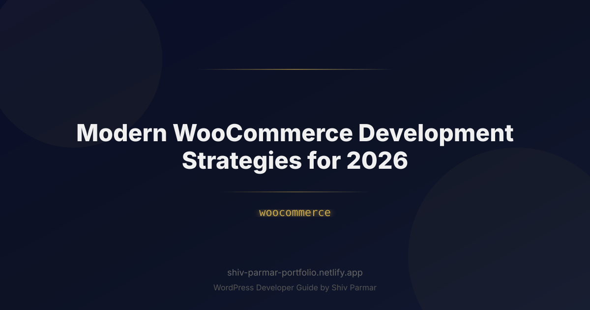

Modern WooCommerce Development Strategies for 2026
Table of Contents
The e-commerce landscape in 2026 is defined by unprecedented demands for speed, personalization, and seamless omni-channel experiences. Online shoppers no longer tolerate slow page loads, clunky checkout workflows, or generic product recommendations. For engineers, agency lead developers, and store owners using WordPress, relying on legacy development patterns from five years ago is a direct recipe for high cart abandonment and plummeting search engine rankings.
Over the past few years, WooCommerce has undergone a massive architectural evolution. The ecosystem has transformed from a traditional monolithic plugin into a flexible, enterprise-grade e-commerce engine. With the total adoption of High-Performance Order Storage (HPOS), full-site editing, block-based checkout workflows, and headless architecture via WPGraphQL, modern store construction requires a fresh technical blueprint.
This comprehensive WordPress guide explores the state-of-the-art strategies, tools, and code patterns required to build blazing-fast, scalable, and future-proof online stores in 2026. Whether you are refactoring an existing store or architecting a multi-million dollar e-commerce platform from scratch, these technical strategies will set you up for long-term success.
What is Modern WooCommerce Development?
Modern WooCommerce development represents a fundamental paradigm shift in how digital storefronts are planned, coded, deployed, and scaled on WordPress. Historically, building a store meant installing a off-the-shelf theme, overloading the site with dozens of third-party plugins, and overriding legacy PHP template files (like single-product.php or cart.php) inside a child theme.
Today, modern engineering treats WooCommerce as a headless-capable, API-first commerce engine backed by custom block components, structured database schemas, and modern PHP standards. It combines decoupled frontend architectures, high-performance object caching, automated CI/CD deployment pipelines, and block-driven user interfaces.
| Development Pillar | Legacy Approach (Pre-2023) | Modern Strategy (2026+) |
|---|---|---|
| Database Architecture | Orders stored inside wp_posts and wp_postmeta |
High-Performance Order Storage (HPOS) dedicated tables |
| Checkout Experience | Legacy PHP shortcode templates ([woocommerce_checkout]) |
React-driven Block Checkout with Extensibility APIs |
| Frontend Architecture | Monolithic PHP template rendering and jQuery dependency | Decoupled/Headless (Next.js/WPGraphQL) or React Gutenberg Blocks |
| Plugin Management | Manual plugin installs via WP Admin panel | Composer-managed dependencies with Git-based deployment |
| Code Standards | Procedural PHP code inside functions.php |
Object-Oriented PHP 8.3+, PSR-12, namespaces, Dependency Injection |
By shifting to modern development practices, developers can create lightning-fast shopping experiences that scale effortlessly during flash sales while maintaining high code quality and security.
Why Modern WooCommerce Development Matters in 2026
The imperative to modernize your development workflow is driven by technical demands, search engine algorithms, and changing consumer behaviors. Continuing to build web stores using outdated methods poses significant business and security risks.
First, Core Web Vitals (specifically Interaction to Next Paint - INP) have become dominant search engine ranking factors. Traditional monolithic stores loaded with heavy JavaScript libraries, unoptimized database queries, and dynamic server rendering often struggle to pass strict INP metrics. Modern decoupled frontends and optimized block components eliminate render-blocking resources, ensuring sub-second visual updates.
Second, database performance bottlenecks have historically plagued large e-commerce platforms built on WordPress. Under legacy architectures, every order creation, meta update, and inventory change slammed the shared post meta table. In high-traffic scenarios—such as Black Friday sales—this led to severe database locks and server crashes. Modern strategies leverage custom database indexing and isolated order storage to support tens of thousands of concurrent transactions.
Finally, enterprise security and compliance requirements (including PCI-DSS 4.0 and global data privacy mandates) necessitate strict environment isolation, automated testing, and headless data flows. Adopting modern engineering patterns safeguards customer payment data while maintaining absolute operational flexibility.
Step-by-Step Guide: Implementing Modern Strategies
To help you transition your store build, this step-by-step section walks through the core implementation stages of a modern 2026 development pipeline.
Step 1: Enforcing High-Performance Order Storage (HPOS) and Modern Queries
HPOS replaces the legacy practice of storing shop order data inside the main wp_posts table, moving order records into dedicated, indexed SQL tables (wp_wc_orders, wp_wc_order_addresses, etc.). This yields up to a 5x improvement in order processing speeds and up to a 40x speedup in complex administrative queries.
When writing custom extensions or internal reporting tooling, you must completely avoid legacy WP_Query or raw wp_posts SQL queries for store orders. Instead, utilize the modern WC_Order_Query class or CRUD repositories.
<?php
declare(strict_types=1);
namespace ModernStore\Queries;
use WC_Order_Query;
use WC_Order;
/**
* Fetch recent high-value customer orders using HPOS-compatible queries.
*/
class OrderRepository
{
/**
* @param int $minimumAmount
* @param int $limit
* @return WC_Order[]
*/
public function getHighValueOrders(int $minimumAmount = 500, int $limit = 10): array
{
$query = new WC_Order_Query([
'limit' => $limit,
'orderby' => 'date',
'order' => 'DESC',
'status' => ['wc-completed', 'wc-processing'],
'total_total' => '>=' . $minimumAmount, // Safe HPOS indexed filter
'return' => 'objects',
]);
return $query->get_orders();
}
}
Always declare HPOS compatibility in your custom plugins inside your plugin entry file, ensuring WooCommerce does not drop back into legacy fallback mode:
<?php
add_action('before_woocommerce_init', function() {
if (class_exists(\Automattic\WooCommerce\Utilities\FeaturesUtil::class)) {
\Automattic\WooCommerce\Utilities\FeaturesUtil::declare_compatibility(
'custom_order_tables',
__FILE__,
true
);
}
});
Step 2: Extending Cart and Checkout Blocks via Extensibility APIs
The standard PHP checkout template hooks (such as woocommerce_checkout_before_customer_details) are deprecated in favor of React-based Gutenberg Checkout Blocks. Custom fields, upsells, and notices inside cart and checkout pages should now be handled through official Block Extensibility APIs.
To append custom attributes or fields to the Checkout Block, register custom data schema using the PHP woocommerce_register_additional_checkout_field API:
<?php
add_action('woocommerce_init', function() {
woocommerce_register_additional_checkout_field([
'id' => 'modern_store/delivery_instructions',
'label' => __('Delivery Instructions', 'modern-store'),
'location' => 'order',
'type' => 'text',
'required' => false,
'attributes' => [
'maxLength' => 150,
'placeholder' => __('Leave package at front door, ring bell...', 'modern-store'),
],
]);
});
This approach registers the field into the unified React checkout flow, updates the internal store state, automatically persists the metadata to the HPOS order entity upon transaction execution, and makes it instantly accessible within REST endpoints.
Step 3: Architecting a Headless WooCommerce Setup with WPGraphQL
For enterprise builds demanding maximum client-side execution speed and total custom UI freedom, decoupled frontends (using Next.js, Remix, or SvelteKit) coupled with WordPress backend data pipelines represent the modern gold standard.
Instead of relying on heavy PHP page renders on every request, your application uses WPGraphQL and WPGraphQL for WooCommerce to query precise product metadata asynchronously.
# GraphQL Query executed by Next.js / React Frontend
query GetProductCatalog($first: Int = 12, $after: String) {
products(first: $first, after: $after, where: { visibility: VISIBLE }) {
pageInfo {
hasNextPage
endCursor
}
nodes {
id
databaseId
name
slug
... on SimpleProduct {
price
regularPrice
stockStatus
}
... on VariableProduct {
price
rawPrice: price(format: RAW)
}
image {
sourceUrl
altText
}
}
}
}
This GraphQL query extracts only the necessary payload data, vastly reducing response sizes compared to traditional REST API responses, enabling instant frontend client state hydration.
Step 4: Implementing Advanced Object Caching and Micro-Caching Strategies
dynamic cart behaviors, inventory changes, and personalized sessions mean you cannot simply apply static HTML page caching across an entire store. Modern engineering relies on multi-layer caching strategies:
- Persistent Object Cache: Utilize Redis or Memcached configured with Object Cache Pro to cache database query results, metadata objects, and transient calculations directly in memory.
- Fragment Caching: Cache heavy non-transactional visual blocks (like global megamenus, footer elements, and recommended product algorithms) while letting cart states render dynamically.
- Edge Micro-Caching: Cache non-logged-in product and category requests at the Cloudflare edge network for 30–60 seconds, drastically minimizing hits to origin PHP workers.
Below is a custom PHP wrapper pattern demonstrating dynamic transient caching for dynamic product recommendations:
<?php
namespace ModernStore\Cache;
class ProductRecommendationEngine
{
private const CACHE_GROUP = 'recommendations';
private const EXPIRATION = 3600; // 1 hour
public function getRecommendedIds(int $productId): array
{
$cacheKey = 'rec_prod_' . $productId;
// Attempt to fetch from Redis persistent object cache
$cachedData = wp_cache_get($cacheKey, self::CACHE_GROUP);
if ($cachedData !== false) {
return $cachedData;
}
// Heavy calculation or external ML recommendation vector call
$recommendations = $this->computeComplexRecommendations($productId);
// Store result in persistent object cache
wp_cache_set($cacheKey, $recommendations, self::CACHE_GROUP, self::EXPIRATION);
return $recommendations;
}
private function computeComplexRecommendations(int $productId): array
{
// Custom analytics processing query logic...
return [101, 104, 208, 305];
}
}
Step 5: Modern PHP Tooling, Composer, and CI/CD Workflows
Writing inline procedural code inside an admin console is obsolete. Modern WordPress stores require strict developer workflows equivalent to enterprise SaaS applications.
Establish modern continuous integration (CI) workflows using Composer for managing dependencies, PHPStan for static analysis code checking, and automated unit testing prior to merging code into production branches.
A typical composer.json setup for modern store modules looks like this:
{
"name": "brand/modern-woocommerce-core",
"description": "Enterprise Extensions for Brand WooCommerce Architecture",
"type": "wordpress-plugin",
"license": "GPL-3.0-or-later",
"autoload": {
"psr-4": {
"Brand\\WooCommerce\\": "src/"
}
},
"require": {
"php": ">=8.2",
"composer/installers": "^2.0"
},
"require-dev": {
"phpstan/phpstan": "^1.10",
"phpunit/phpunit": "^10.0",
"squizlabs/php_codesniffer": "^3.7"
},
"scripts": {
"analyze": "phpstan analyze src --level=8",
"test": "phpunit tests"
}
}
Best Practices for Modern WooCommerce Engineers
Adhering to strict architectural standardizations ensures code bases remain maintainable, secure, and extensible across multi-developer teams. When crafting customized solution layers on top of WordPress, apply the following fundamental operational guidelines.
1. Enforce Strict OOP, PSR Standards, and PHP 8.3 Features
Avoid polluting global function namespaces. Wrap custom plugin logic into typed, object-oriented structures taking advantage of modern PHP 8.2/8.3 capabilities such as constructor property promotion, enums, read-only classes, and strict type signatures.
<?php
declare(strict_types=1);
namespace ModernStore\DTO;
readonly class InventoryStatus
{
public function __construct(
public int $productId,
public int $stockQuantity,
public bool $isInStock,
public string $sku
) {}
}
2. Decouple Logic Using Custom REST API Extensions
Avoid relying on admin-ajax.php endpoints for asynchronous client interactions. Legacy admin-ajax requests instantiate the complete administrative dashboard scope, introducing heavy CPU execution overhead on every AJAX hit. Instead, register lightweight endpoints using standard register_rest_route namespaces.
<?php
add_action('rest_api_init', function() {
register_rest_route('modern-store/v1', '/stock-check/(?P<id>\d+)', [
'methods' => 'GET',
'callback' => 'handle_stock_check',
'permission_callback' => '__return_true',
]);
});
function handle_stock_check(\WP_REST_Request $request): \WP_REST_Response
{
$productId = (int) $request->get_param('id');
$product = wc_get_product($productId);
if (!$product) {
return new \WP_REST_Response(['error' => 'Product not found'], 404);
}
return new \WP_REST_Response([
'id' => $productId,
'in_stock' => $product->is_in_stock(),
'qty' => $product->get_stock_quantity(),
], 200);
}
3. Standardize Your Technology Stack
Maintaining a cohesive and streamlined tooling collection minimizes core security footprint vulnerabilities while maximizing front-to-back delivery velocity.
| Layer | Recommended 2026 Tech Tooling | Primary Benefit |
|---|---|---|
| Database Storage | MySQL 8.0+ / MariaDB 10.11+ with HPOS | Optimized JSON queries & indexed order management |
| Caching Engine | Redis Enterprise + Object Cache Pro | In-memory query payload execution prevention |
| Headless Framework | Next.js 14+ / WPGraphQL | Instant SSR/SSG rendering & enterprise routing |
| Search & Discovery | Typesense / Algolia Vector Search | Sub-20ms semantic dynamic site search capabilities |
| CI/CD Pipeline | GitHub Actions + Composer + PHPStan | Automated code validation & zero-downtime deployment |
Common Mistakes to Avoid
Even seasoned developers can fall into traps when modernizing their e-commerce technical stack. Avoid these costly architectural mistakes:
1. Overriding Core PHP Templates Instead of Using Block Components
Copying standard core templates (like single-product.php or cart-errors.php) directly into child theme folders creates technical debt. When core updates occur, custom child theme templates break or bypass essential security patches. Build modular Gutenberg blocks or utilize React Component hooks instead of hard-overriding PHP files.
2. Direct Database Mutations via WPDB
Never write direct SQL raw updates to core payment, transaction, or stock tables using global $wpdb->query() calls unless explicitly necessary for mass data migration tasks. Bypassing native CRUD classes (WC_Product::save(), WC_Order::save()) prevents vital validation routines from triggering, skips cache purging routines, and bypasses third-party integration webhooks.
3. Installing Legacy Monolithic Plugins for Single Micro-Features
Installing heavy third-party plugins to resolve simple functional tweaks (such as adding a custom user profile field or modifying line-item order display) bloats your codebase. Evaluate whether tiny micro-features can be cleanly written internally using PSR-compliant custom code modules instead of adding external dependencies.
4. Neglecting Automated Staging and Production CI/CD Pipelines
Editing code directly on live production environments via SFTP or dashboard code editors remains one of the largest security and stability vulnerabilities in modern web development. Always build applications locally inside containerized environments (like DDEV or Lando), track changes via version control systems (Git), and automate staging deployments via CI/CD test pipelines.
5. Ignoring Indexing and Transient Expiration on Large Meta Queries
Performing custom meta_query operations filtering across thousands of product variations without adding underlying MySQL database column indexing severely locks server resources. Always structure metadata searches using indexed taxonomy terms or modern custom table schemes rather than deep non-indexed post-meta lookups.
Conclusion
As we navigate the e-commerce landscape of 2026, building a high-performing store requires more than just out-of-the-box settings. Modern woocommerce development hinges on leveraging headless architecture, aggressive performance optimization, and tailored API integrations. By adopting these advanced strategies, store owners can deliver lightning-fast shopping experiences, improve conversion rates, and future-proof their digital footprint.
Navigating these technical shifts is much smoother when backed by actionable insights and reliable resources. Incorporating the best practices outlined in this WordPress guide ensures your store remains secure, scalable, and competitive. As the WordPress platform continues to evolve, staying updated with modern development standards is essential for long-term business success.
Ready to take your online store to the next level? If you need professional assistance implementing these strategies, Shiv Parmar is available for WordPress development work worldwide. Whether you are launching a new custom store or optimizing an existing platform, feel free to reach out to craft a tailored solution for your business.